Génération de nuages 3D
à partir de sources hétérogènes
Kara D. Lamb (Columbia University) · Mikołaj Czerkawski (Asterisk Labs)
À propos de moi
Formation
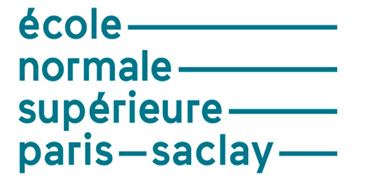
Intérêts de recherche
- Machine learning 🤖
- Télédétection 🛰
- Géosciences & climat 🌍
- 3D 🧩
Expériences
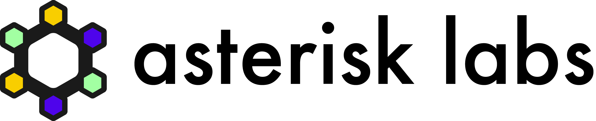
Les nuages : un système complexe
Ils ont un impact majeur sur le climat, mais sont régis par des processus physiques :
- non linéaires
- stochastiques
- couplés : microphysique, thermodynamique, turbulence, rayonnement
- multi-échelles : ~9 ordres de grandeur
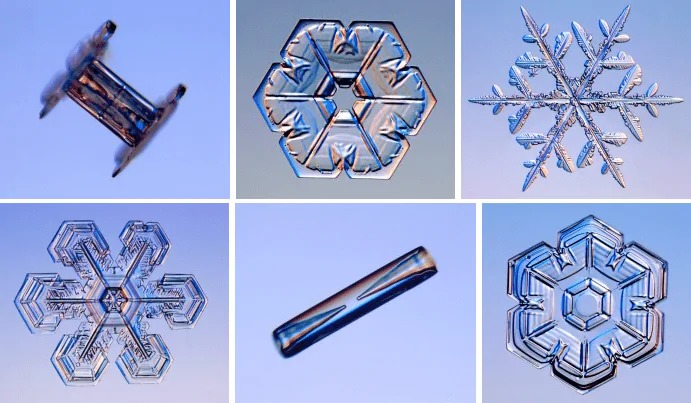
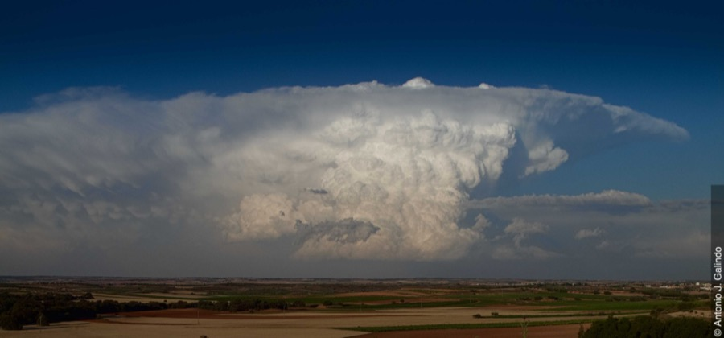
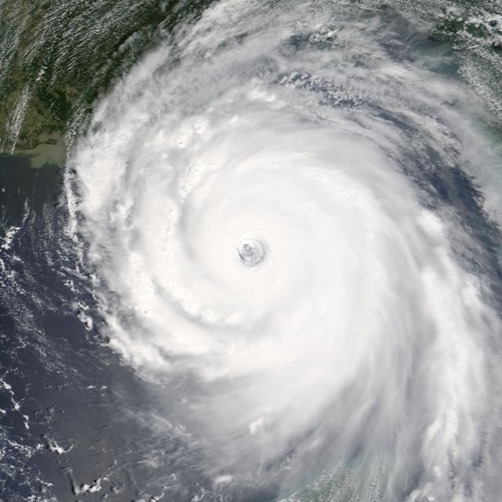
La première source d'incertitude des modèles climatiques
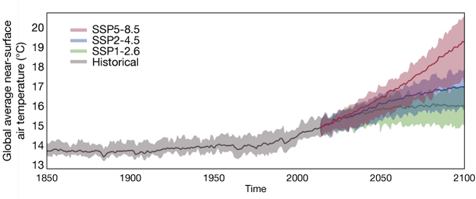
Observer les nuages depuis l'espace
Peu d'observations 3D globales
→ seulement le haut du nuage
→ traverse toute l'épaisseur du nuage
On observe les nuages :
- en 2D vu d'en haut (imageurs passifs)
- en 2D vertical, sous le passage des satellites (radar, lidar)
- on ne les observe jamais en 3D !
Équipe d'encadrement pluridisciplinaire
3D & télédétection
atmosphérique
& Machine Learning
& Machine Learning
État de l'art : prédiction 3D depuis une cible 2D sparse
Les approches existantes tentent de prédire la structure 3D du nuage en s'entraînant contre une vérité-terrain sparse (traces radar/lidar)
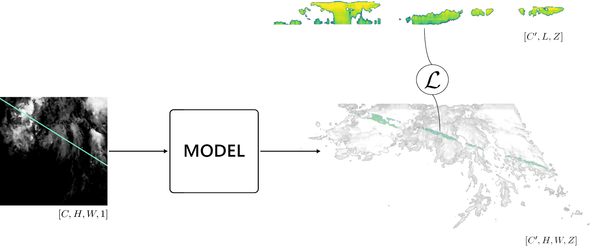
Un problème récurrent : des prédictions floues


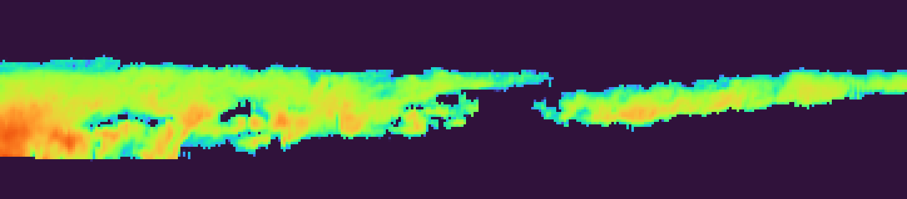
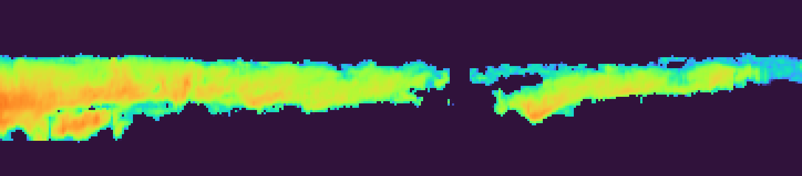
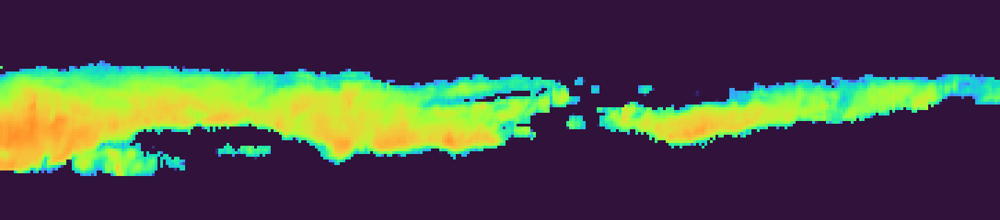
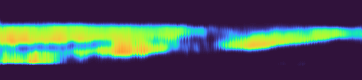
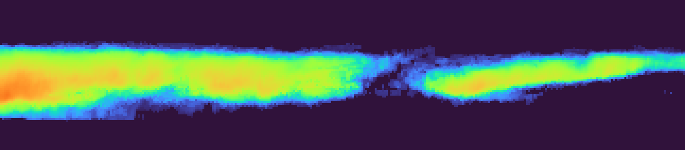
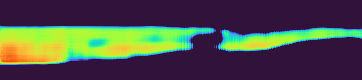
Teaser : qu'est ce qu'on veut faire ?
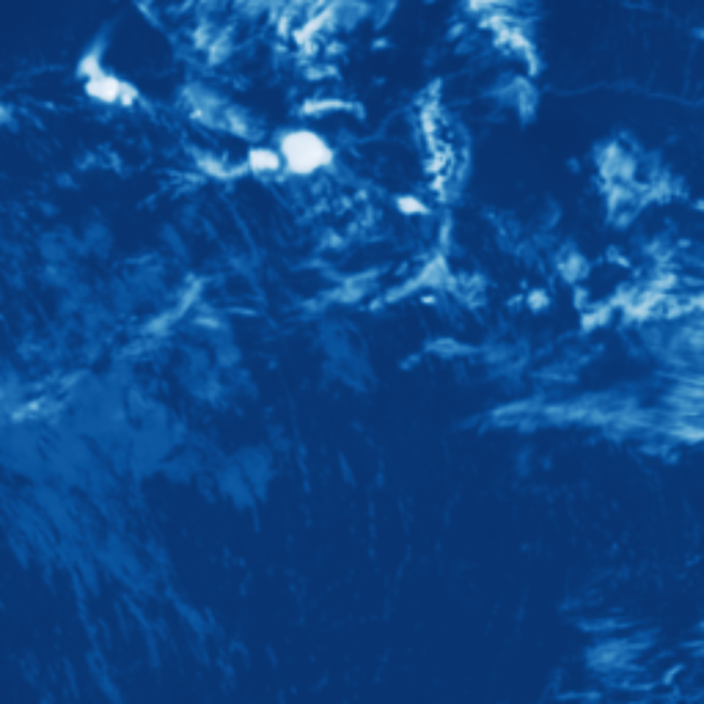
modèle
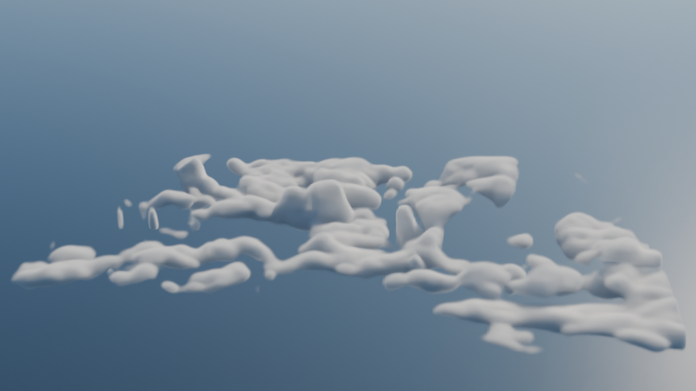
Notre outil : le flow matching
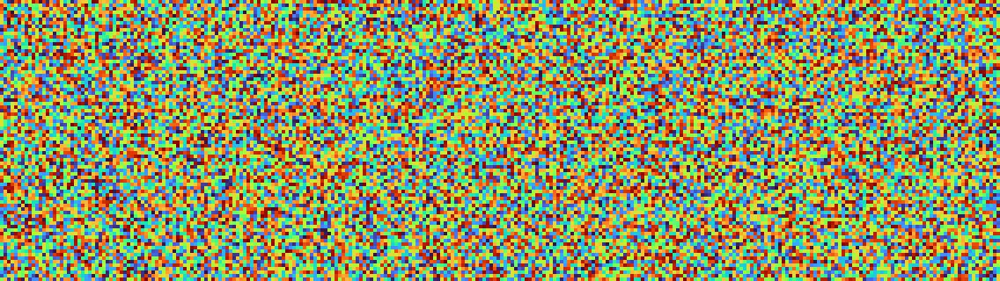
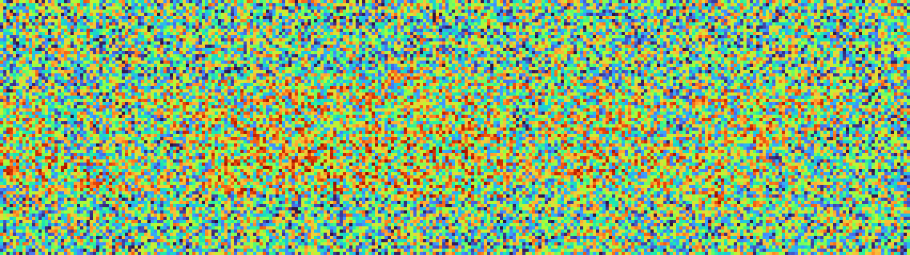
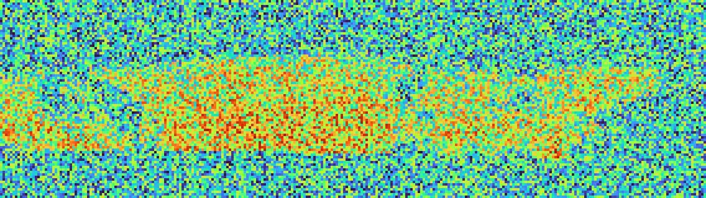
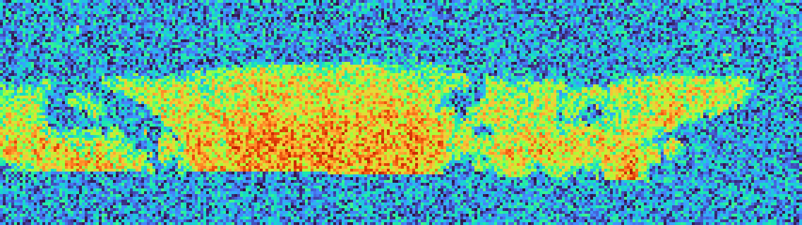
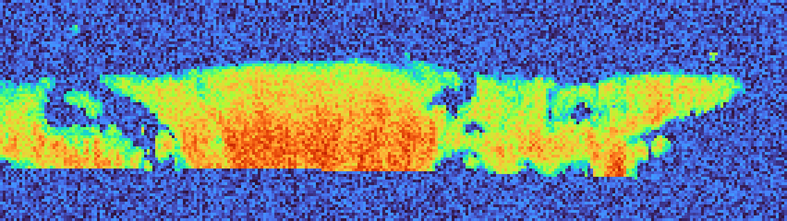
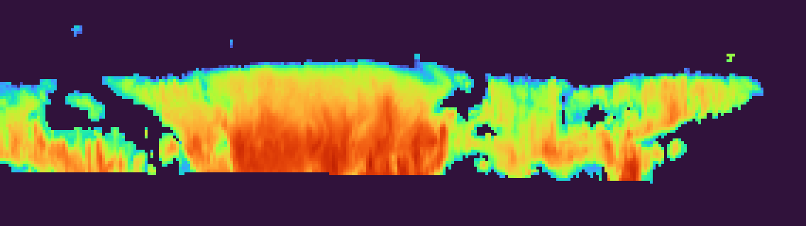
Notre approche : Mikado : entraînement
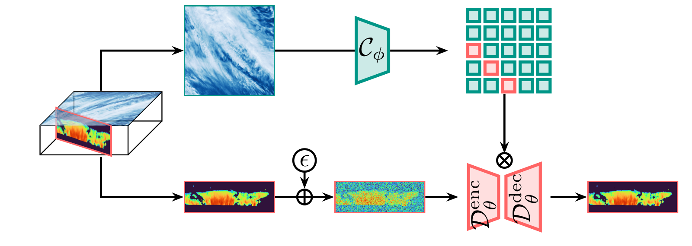
Notre approche : Mikado
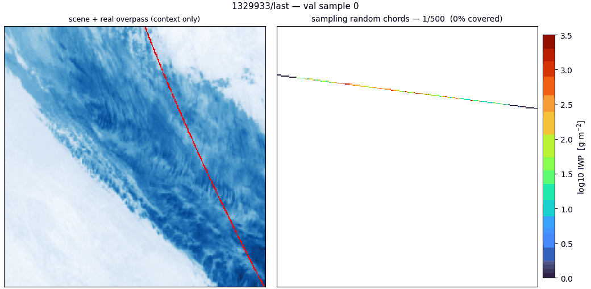
puis on finit de remplir le volume avec un inpainting TV-$\ell_1$.
Résultats préliminaires (modèle génératif 2D)
| Contenu en glace (IWC) mg/m³ |
Particules de glace 1000×part./m³ |
|||||
|---|---|---|---|---|---|---|
| dataset FDL | dataset ICN | dataset ICN | ||||
| MAE↓ | FID↓ | MAE↓ | FID↓ | MAE↓ | FID↓ | |
| FDL | 49.3 | 0.92 | n/a | n/a | n/a | n/a |
| ICN | 52.9 | 0.72 | 56.5 | 0.38 | 68.7 | 0.53 |
| Nous (oracle) | 65.1 | 0.10 | n/a | n/a | n/a | n/a |
(oracle) : on ne génère pas tout le volume 3D, seulement la coupe sur laquelle les métriques sont évaluées.
MAE : la précision
Erreur moyenne point à point. Favorise mécaniquement les prédictions floues.
FID : le réalisme
Compare la distribution des prédictions à celle des vraies coupes : pénalise le flou.
Prochaines étapes
- Corriger les artefacts du modèle 2D (flow matching)
- Passer à l'échelle pour atteindre une MAE comparable aux approches déterministes
- Finaliser le benchmark et
mesurer l'incertitude du modèle
- CRPS : Continuous Ranked Probability Score
- SER : Spread-Error Ratio
- Ranking histogram : histogramme de rang (Talagrand)
- Faire fonctionner le passage 2D → 3D
Prochains projets & feuille de route
P2 Génération en une étape
One-step generation (reflow, drifting models…) : une seule passe au lieu d'une longue trajectoire de génération, et plus de problème de supervision sparse.
P3 Climatologie 3D des nuages
Analyse de la climatologie des nuages en 3D : classification en régimes et définition de métriques 3D.
P4 ML multimodal, données hétérogènes
Vérifier si ajouter de l'information (séries temporelles MTG, données spectrales MTG-S, autres sources hétérogènes) réduit l'incertitude.
Autres activités durant la thèse
École d'été C3SAR (30 h)
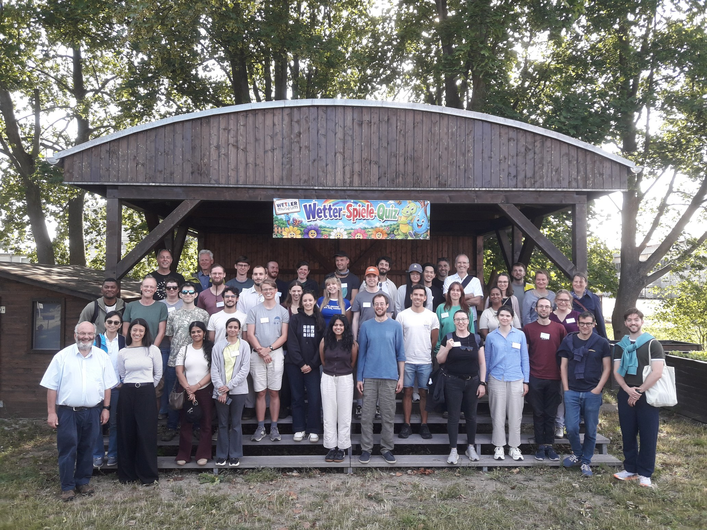
Cours "Nuages et aérosols" (30 h)
Master SOAC, Sorbonne.
Plan pour après la thèse
Recherche académique, ou quelque chose qui y est lié :
Asterisk Labs
Coopérative de recherche avec qui j'ai travaillé avant la thèse et qui me co-supervise.
Postdoctoral fellowship dans un organisme spatial européen
ESA, EUMETSAT, ECMWF.
Postdoctoral fellowship à l'étranger
Londres / Oxford / Zurich / New York / Boulder (selon l'évolution du climat de la recherche aux États-Unis).